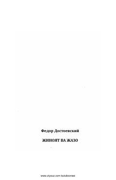

ʻVRaskolnikovning jinoyati va vijdon azoblarini tasvirlovchi buyuk roman.
Bu kitob Fyodor Dostoyevskiyning mashhur 'Jinoyat va Jazo' romanining o'zbek tilidagi tarjimasi bo'lib, 1977-yilda Toshkentda G'afur G'ulom nomidagi Adabiyot va san'at nashriyotida chop etilgan. Roman talaba Raskolnikovning qotillik jinoyati va uning vijdon azoblarini tasvirlaydi. Asar insonning axloqiy tanazzuli va ruhiy iztiroblari haqida chuqur falsafiy mulohazalar yuritadi.